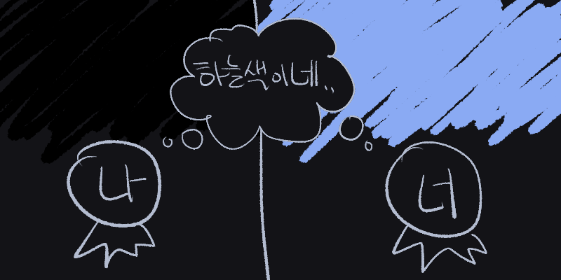

🗿 New Color
어렸을 때 그런 생각을 함
색에 관한 생각인데
두 가지임
🗿
하나는 처음 보는 색에 관한 거임
우리가 지금 당장 볼 수 있는 색들 말고
전혀 보지못한 새로운 색이 있을까?
물론 우리는 빛을 보는 건 맞는데
판타지 같은 얘기인건 아는데
그래도 우리가 진짜 모르는 그런 색이 있을 지
진짜 처음보는 색을 보면 어떤 느낌일까 궁금함
색맹인 사람이 무슨 안경을 끼는지 수술을 하는지 하면 색이 보인다고 하던데
그렇게 그동안 못 보던 색을 보는 느낌이 진짜 궁금하기도 하고
진짜 한 번도 보지못한 전혀 새로운 색을 볼 수 있을 지도 궁금함
그냥 그렇다고
🗿
또 하나는 내가 보는 색이 너가 보는 색하고 같은 건지임
하늘이 낮에는 하늘색, 밤에는 검은색이잖슴?
근데 내가 생각하는 하늘색과 검정색이
너가 생각하는 하늘색과 검정색이 아닐 수도 있다는 거임
너는 내가 검은색이라고 생각하는 걸 하늘색이라고 생각하고 있고,
나는 너가 하늘색이라고 생각하는 걸 검은색으로 생각할 수도 있는거임
그러니까 나는 지금 하늘이 낮엔 하늘색이고 밤엔 검은색이고, 그렇게 생각하고는 있는데
그건 내가 어렸을 때 낮의 하늘을 하늘색, 밤의 하늘은 검은색이라고 배워서 그 색과 단어를 매칭을 했을 뿐임
실제로 내가 보는 색이 너가 보는 색이랑 같은 지는 모름
그래서 우리가 서로 보고 있는 색이 다를 수도 있지 않을까? 하는 생각임
그러니까 색이랑 단어를 구분지어서 생각해야함
말로 설명하기 어렵네
그림으로 그려보면

이런 거임
너의 시각에서 본 너와 나의 하늘색임
너가 보는 낮의 하늘은 하늘색임
우리 모두 어렸을 때 그렇게 배웠잖슴
근데 내가 보는 낮의 하늘이, 너가 보기에는 검정색 일 수 있다는 거임
하지만 나는 니가 보기에 검정색인걸 하늘색이라고 알고 있음
왜냐면 내가 보는 낮의 하늘은 너가 보기에 검정색이지만, 아무튼 나는 낮의 하늘은 하늘색이라고 배웠으니까.
여기서 내 생각을 다시 한 번 말하자면, 우리가 서로 보고 있는 색이 다를 수도 있다는 거임.
설명을 헷갈리게 하늘이랑 하늘색 가지고 해서 조같을 수 있는데
그림 수정하기 귀찮음 ㅈㅅ
근데 오히려 내 생각을 잘 표현하는 것 같음
그니까 나는 낮의 하늘이 니가 보기에 검정색인 세상을 보고 있음.
근데 낮의 하늘색을 우리가 하늘색으로 부르기로 약속했잖슴?
그래서 나는 니가 보기엔 검정색인 낮의 하늘을 하늘색이라고 배웠음.
그래서 나의 하늘색은 니가 보기에 검정색임.
하지만 이걸 알 방법은 없음
우리가 서로 정신을 바꿔도 너가 보는 낮의 하늘색은 하늘색일 거임
우리의 눈과 뇌가 생각하기에 낮의 하늘색은 언제나 그 눈과 뇌가 생각하는 하늘색이거든
우리가 서로 정신을 바꾼 후 너가 보는 세상의 낮의 하늘은, 우리가 서로 정신을 바꾸기 전 너가 생각하던 검정색이지만
우리가 서로 정신을 바꾼 후 너의 뇌는 그런 낮의 하늘을 하늘색이라고 인지하는 거임
이야기가 좀 샜는데
아무튼 결론은 우리가 보는 색이 서로 다를 수 있다는거임
그게 전혀 새로운 색이든, 내가 보고 있는이 섞인거든 간에 말임